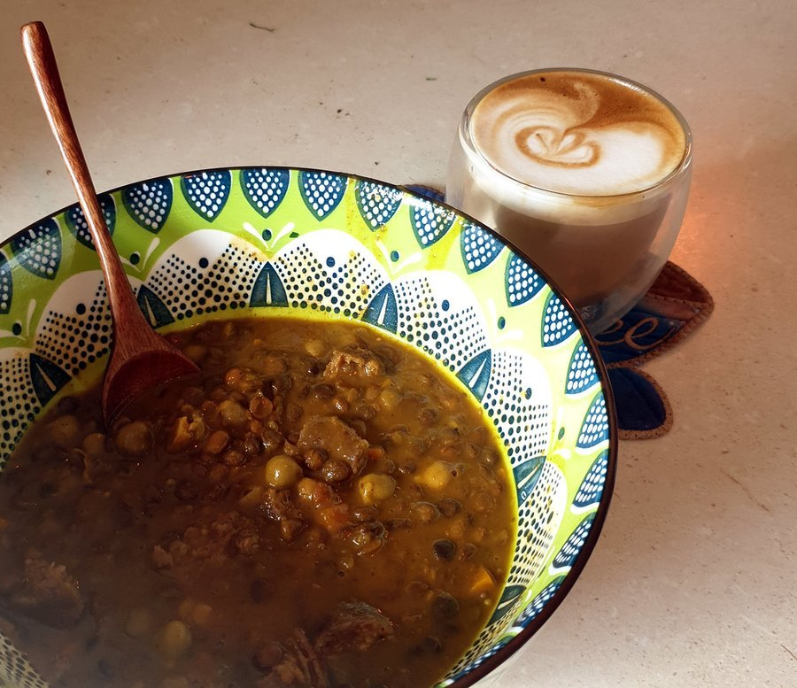

Anti-Inflammatory Foods List: What to Eat More Of
Chronic, low-grade inflammation is linked to heart disease, joint pain and even cognitive decline. Here's what actually belongs on an anti-inflammatory plate, and why.

Key takeaways
- No single food fights inflammation on its own. The strongest evidence points to an overall eating pattern, closer to a Mediterranean-style diet, rather than any one "superfood."
- Fatty fish, extra-virgin olive oil, berries, leafy greens and nuts have the most consistent research behind them for lowering markers of chronic inflammation.
- Chronic low-grade inflammation is different from the acute kind that helps you heal from a cut; it's the long-running, low-level kind linked to heart disease, joint pain, type 2 diabetes and cognitive decline.
- What you cut back on matters as much as what you add: refined sugar, processed meats and fried foods are consistently linked to higher inflammatory markers.
- Results build over weeks, not days. Dietary changes affect inflammation gradually, as part of an overall pattern, not as a quick fix for an active flare.
An anti-inflammatory foods list is one of the more searched topics in nutrition, and for good reason: chronic low-grade inflammation is tied to a long list of conditions, from heart disease and type 2 diabetes to joint pain and, increasingly, cognitive decline. The honest answer is that no single food turns inflammation off. What the evidence actually supports is an overall eating pattern built around a specific group of foods, repeated consistently.
That pattern looks a lot like the traditional Mediterranean diet, which remains one of the most studied anti-inflammatory approaches in nutrition research. Below is a practical list of what to eat more of, what the evidence says about why, and the foods worth cutting back on at the same time.
What is chronic inflammation, and why does diet matter?
Inflammation is the body's normal response to injury or infection, and in that acute form it's protective, not harmful. Chronic, low-grade inflammation is different: it's a long-running, low-level immune response that doesn't fully switch off, often driven by excess body fat, poor sleep, chronic stress, and a diet heavy in refined carbohydrates and processed foods.
Researchers track this kind of inflammation with blood markers like C-reactive protein (CRP) and interleukin-6 (IL-6). Diets higher in the foods on this list are consistently associated with lower levels of these markers in population studies, which is the main evidence base behind calling a food "anti-inflammatory."
Which foods have the strongest anti-inflammatory evidence?
| Food group | Examples | Why it helps |
|---|---|---|
| Fatty fish | Salmon, sardines, mackerel, trout | Rich in omega-3 fatty acids (EPA and DHA), which the body converts into compounds that help resolve inflammation |
| Extra-virgin olive oil | Used in place of butter or vegetable oil | Contains oleocanthal, a compound with effects similar to ibuprofen in lab studies, plus monounsaturated fats |
| Berries | Blueberries, strawberries, blackberries | High in anthocyanins, antioxidant compounds linked to lower inflammatory markers |
| Leafy greens | Spinach, kale, Swiss chard | Rich in vitamin K and antioxidants, with fiber that supports a healthy gut microbiome |
| Nuts | Walnuts, almonds | Provide healthy fats, fiber and plant compounds associated with lower CRP levels in several studies |
| Cruciferous vegetables | Broccoli, Brussels sprouts, cauliflower | Contain sulforaphane, a compound studied for its effect on inflammatory pathways |
These six groups show up repeatedly across nutrition research as the backbone of an anti-inflammatory pattern. None of them needs to be eaten daily in large amounts. Consistency over weeks and months is what the evidence actually supports, not a single "anti-inflammatory meal."
What about spices like turmeric and ginger?
Turmeric contains curcumin, a compound studied for anti-inflammatory effects in lab and some human studies, though curcumin is poorly absorbed on its own. It's typically combined with black pepper (which contains piperine) to improve absorption, and the doses used in positive studies are often higher than what a typical serving of turmeric powder provides.
Ginger has a longer history of use for inflammation and nausea, with modest supporting evidence for joint-related discomfort in some trials. Both are reasonable additions to a meal, but neither replaces the broader dietary pattern; think of them as a small add-on, not the main intervention.
Does an anti-inflammatory diet help with joint pain specifically?
There's reasonable evidence that an overall anti-inflammatory eating pattern, particularly one rich in omega-3s, can modestly ease symptoms for some people with inflammatory joint conditions like rheumatoid arthritis, alongside medical treatment rather than instead of it. For general wear-and-tear joint pain, diet plays a smaller supporting role compared with weight management and targeted exercise; our Joints & Mobility hub covers that side in more depth.
Which foods tend to work against an anti-inflammatory diet?
- Added sugar and refined carbohydrates: sugary drinks, pastries and white bread are consistently linked to higher inflammatory markers in observational studies.
- Fried foods: repeated frying, especially reused oil, produces compounds associated with oxidative stress and inflammation.
- Processed and red meat: frequent consumption of processed meats like bacon, sausage and deli meat shows some of the more consistent associations with inflammation in large cohort studies.
- Refined vegetable oils high in omega-6, used in excess: the ratio of omega-6 to omega-3 fats in a diet matters more than any one fat being "bad"; a diet heavy in fried and processed food tends to skew that ratio.
- Excess alcohol: moderate-to-heavy drinking is associated with higher inflammatory markers, independent of its other health effects.
None of this means these foods need to disappear entirely. The pattern that shows up across the research is dose and frequency: an occasional dessert or burger doesn't undo weeks of an otherwise anti-inflammatory diet, but a daily habit of them likely does.
What role does fiber and the gut microbiome play?
Fiber feeds the bacteria in your gut that, in turn, produce short-chain fatty acids like butyrate, compounds with measurable anti-inflammatory effects in the gut lining and beyond. A diet low in fiber and high in ultra-processed food tends to shift the gut microbiome toward species linked with higher inflammation, while a diet rich in vegetables, legumes, and whole grains supports the opposite shift.
Fermented foods, like plain yogurt, kefir, sauerkraut, and kimchi, add live bacterial cultures directly, and some research links regular intake to lower inflammatory markers, likely through their effect on gut microbial diversity. Neither fiber nor fermented foods work overnight. Like the rest of this list, the benefit shows up with weeks of consistent intake, not a single serving.
Does losing weight reduce inflammation on its own?
Yes, often independent of which specific foods drive the weight loss. Excess body fat, particularly visceral fat around the abdomen, actively produces inflammatory signaling molecules, so reducing it tends to lower measured inflammation regardless of the exact diet used to get there. This is one reason an anti-inflammatory diet and a weight-management diet overlap so heavily in practice, even though they're framed differently.
That said, the quality of the diet still matters beyond the number on the scale. Two people who lose the same amount of weight, one through a diet built around whole foods and one through a diet of ultra-processed "diet" products, don't necessarily see the same improvement in inflammatory markers. Food quality and weight both contribute, and neither fully substitutes for the other.
Is the Mediterranean diet the same thing as an anti-inflammatory diet?
They overlap heavily. The Mediterranean diet, built around vegetables, fruit, whole grains, legumes, fish, olive oil and modest dairy, with red meat and sweets as occasional foods, is the most-studied dietary pattern for lowering chronic inflammation and is often used as the template when researchers test "anti-inflammatory diets" directly. If you're looking for one overarching framework rather than a list of individual foods, the Mediterranean pattern is the one with the deepest evidence base.
Can an anti-inflammatory diet affect brain health?
There's a growing body of research connecting chronic inflammation to brain aging and cognitive decline, and diets closer to the Mediterranean pattern have been associated with slower cognitive decline in several long-term studies. The mechanism isn't fully settled, but omega-3s, antioxidants and better blood sugar control, all features of this eating pattern, plausibly support brain health through more than one pathway. For more on the foods tied specifically to memory, see our guide to foods and habits for memory, and our breakdown of omega-3 for brain health.
How quickly can diet changes affect inflammation?
Some inflammatory markers can shift within a few weeks of a significant dietary change, but meaningful, durable improvement is generally seen over months, not days. Studies that find a benefit almost always involve sustained dietary patterns, not a short-term cleanse or detox. If you're making changes hoping to feel a difference, give it at least 8 to 12 weeks before judging the result.
Do supplements work as well as whole foods for inflammation?
Generally, no. Whole foods bring fiber, a mix of nutrients, and food-matrix effects that isolated supplements don't replicate. Fish oil supplements, for example, show more modest and inconsistent results in trials than diets naturally rich in fatty fish. Food first is the more evidence-backed approach; supplements are reasonable to fill a specific, confirmed gap, not as a substitute for the overall pattern.
What does a simple anti-inflammatory day of eating look like?
A practical version doesn't require a strict meal plan: a vegetable- and olive-oil-forward lunch, a serving of fatty fish two to three times a week, a handful of nuts or berries as a snack, and leafy greens worked into at least one meal a day covers most of the list above without much extra effort. Swapping a sugary drink for water or unsweetened tea, and choosing grilled over fried most of the time, covers much of the "what to cut back on" side.
- Breakfast: plain yogurt with berries and a sprinkle of walnuts, or oatmeal with cinnamon and ground flaxseed.
- Lunch: a large salad with leafy greens, chickpeas, olive oil and lemon, or a whole-grain wrap with vegetables and hummus.
- Dinner: grilled or baked salmon with roasted broccoli and a side of quinoa.
- Snacks: a small handful of almonds, an apple, or carrot sticks with hummus.
- Drinks: water, unsweetened tea, or coffee in moderation, with sugary sodas and juice kept occasional.
Who should be cautious with an anti-inflammatory diet?
Most people can adopt this pattern safely, but a few groups should check with a doctor first: people on blood thinners (since omega-3s and some spices like turmeric and ginger can affect clotting at high doses), people with gallbladder issues (since a sudden increase in fat intake can trigger symptoms), and anyone managing a chronic inflammatory condition who is already under treatment, since diet should complement medical care, not replace it.
How do you know if the changes are actually working?
Most people won't feel a dramatic difference day to day, since chronic low-grade inflammation doesn't usually cause an obvious symptom on its own the way acute inflammation does. The more honest markers are indirect: steadier energy, fewer digestive complaints, and for some people, modest improvement in joint stiffness or skin over a couple of months. For anyone tracking it more formally, a doctor can order a CRP test before and after a sustained dietary change, though this is more useful for research or specific risk assessment than day-to-day motivation.
It's worth judging the diet on the full pattern rather than any single meal. A rough week doesn't erase two months of better choices, and one indulgent dinner doesn't undo an otherwise consistent routine. That's the same forgiving standard that makes this approach sustainable long after a stricter short-term plan would have been abandoned.
Frequently asked questions
Is coffee pro-inflammatory or anti-inflammatory?
For most people, moderate coffee consumption is associated with neutral or even slightly lower inflammatory markers, likely due to its antioxidant content. Added sugar and cream in large amounts can offset some of that benefit.
Are eggs inflammatory?
Current evidence doesn't support eggs as broadly inflammatory for most people. Older concerns centered on dietary cholesterol, which has a smaller effect on blood cholesterol for most people than once believed. Individual response can vary, especially with existing heart disease.
Does dairy cause inflammation?
Evidence is mixed and appears to depend on the type and the person. Fermented dairy like yogurt is often linked to neutral or favorable inflammatory markers, while some people with dairy sensitivity report symptom flares, which is a personal response rather than a universal effect.
Can intermittent fasting reduce inflammation?
Some studies suggest intermittent fasting patterns can lower certain inflammatory markers, though results vary and much of the benefit may come from associated weight loss and improved blood sugar rather than fasting itself as a unique mechanism.
Is gluten inflammatory for people without celiac disease?
For most people without celiac disease or diagnosed gluten sensitivity, there's limited evidence that gluten itself drives inflammation. People with celiac disease have a specific, well-documented immune reaction to gluten that's a separate issue entirely.
How much fish per week is considered anti-inflammatory?
Many guidelines, including the American Heart Association's, suggest two servings of fatty fish per week as a reasonable target for omega-3 intake linked to lower inflammation and cardiovascular benefit.
Can an anti-inflammatory diet replace medication for a diagnosed condition?
No. Diet can meaningfully support treatment for inflammatory conditions, but it isn't a substitute for prescribed medication or medical supervision. Any changes to treatment should go through your doctor.
Related: Foods and habits for memory after 50 · Omega-3 for brain health · Brain fog: causes and fixes
Image: David Jackmanson / Openverse (Flickr) / CC BY 2.0